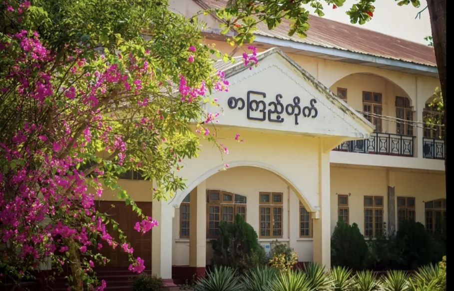
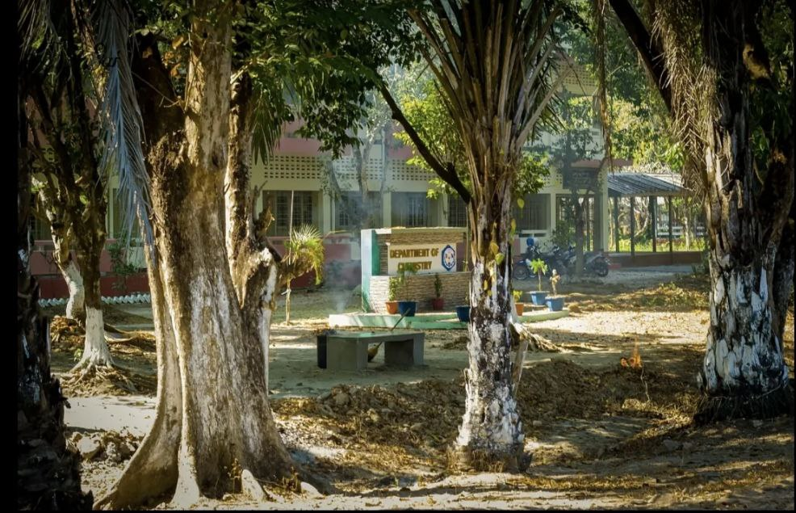
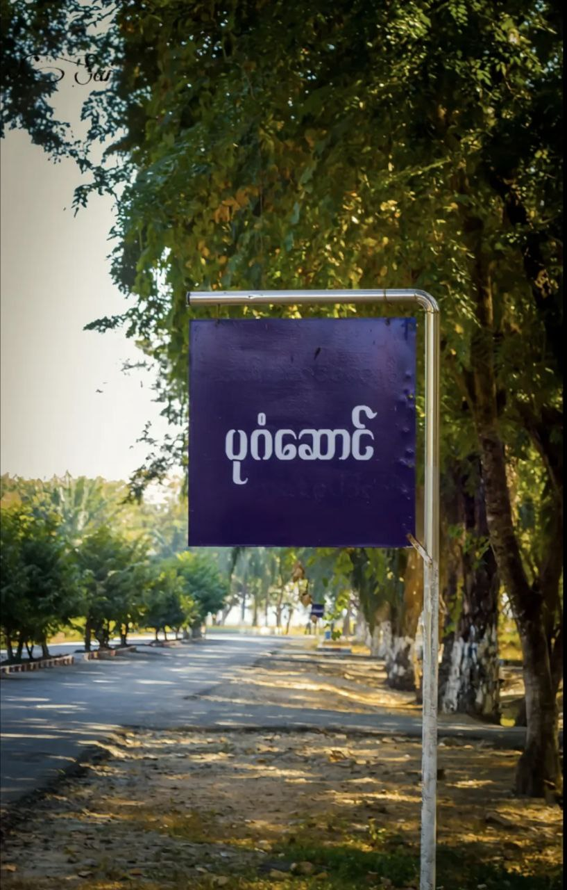
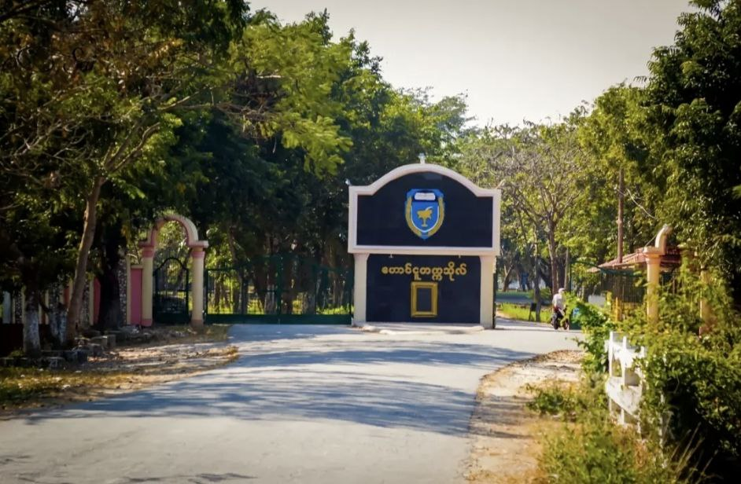
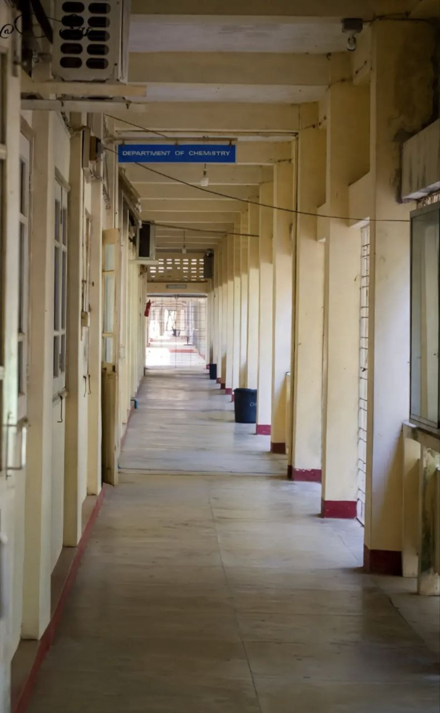
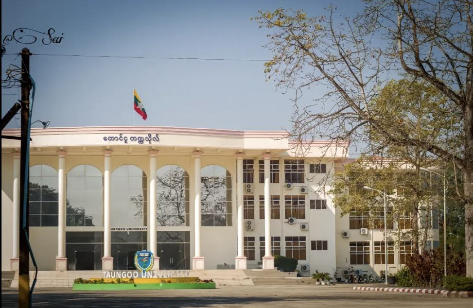
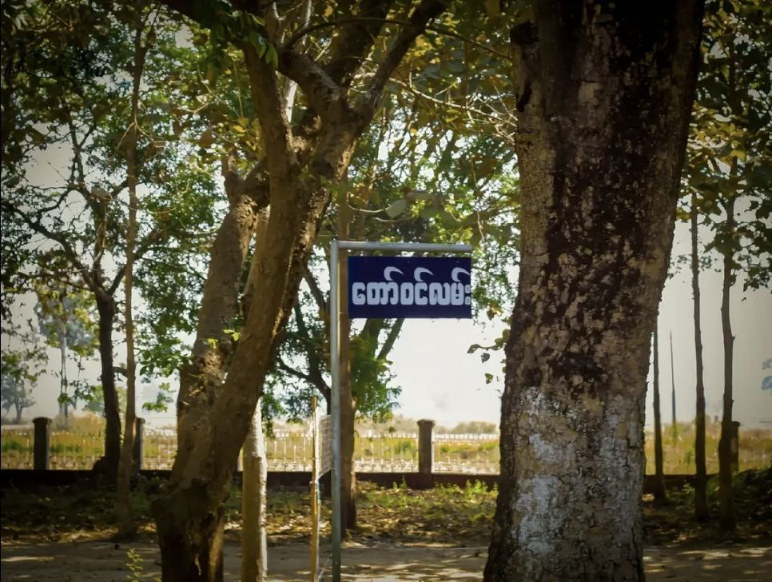
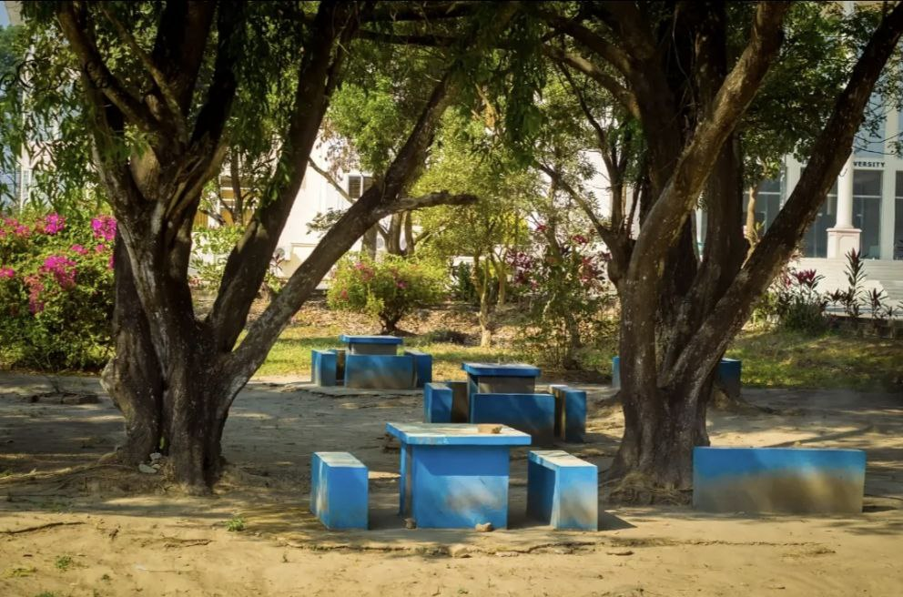
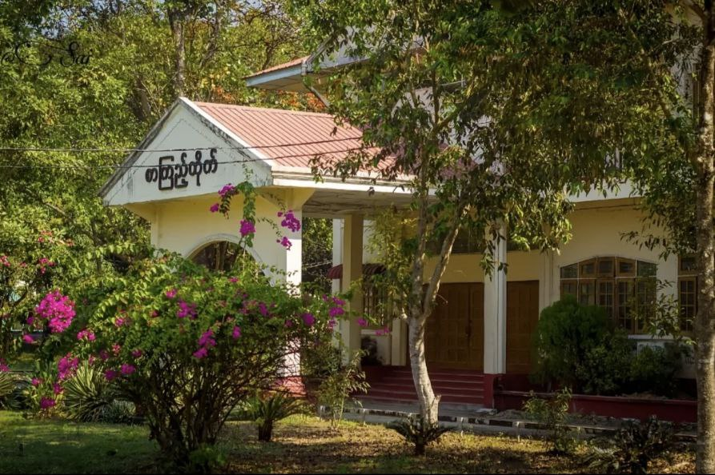

About the University
တောင်ငူတက္ကသိုလ် သည် မြန်မာနိုင်ငံ၊ ပဲခူးတိုင်းဒေသကြီး၊ တောင်ငူမြို့တွင် တည်ရှိသည့် ဝိဇ္ဇာနှင့် သိပ္ပံတက္ကသိုလ်တစ်ခု ဖြစ်သည်။ တောင်ငူခရိုင်နှင့် အနီးအနားရှိ ကျောင်းသားကျောင်းသူများအတွက် ဝိဇ္ဇာ၊သိပ္ပံနှင့် ဥပဒေဆိုင်ရာ ဘွဲ့များနှင့် မဟာဘွဲ့သင်တန်းများကို သင်ကြားပေးနေသည်။
Why Choose Taungoo University?
Historic Flagship Campus
Over a century of academic tradition and a central role in Myanmar's higher education system.
Diverse Academic Departments
Twenty-one departments in arts, sciences and law offer broad study options and research opportunities.
Modernized Teaching Approach
Focus on student-centred learning to develop critical thinking and independent study skills.
National & Regional Influence
Produces many of Myanmar's leaders, academics and professionals in public and private sectors.
Campus Gallery

🏛️

📚

🏠

🏠

🏠

🏠
Academic Programs
Undergraduate and postgraduate programmes in arts, sciences and law
Arts Programmes
Bachelor of Arts (B.A.)Arts degrees offered through departments such as Myanmar, English, History, Philosophy, Psychology, Anthropology and International Relations.
Science Programmes
Bachelor of Science (B.Sc.)Science degrees through departments including Physics, Chemistry, Mathematics, Geology, Zoology and Biology.
Law Programme
Bachelor of Laws (LL.B)Law degree offered by the Department of Law, preparing graduates for legal practice, public service and further legal studies.
Postgraduate Degrees
Master's ProgrammesMaster's degrees in various arts, science and law subjects, including MA, MSc and LLM programmes.
Doctorate & Diplomas
PhD & Postgraduate DiplomasDoctoral programmes and postgraduate diplomas across selected arts and science disciplines.
University Initiatives & Research
Academic development and research activities
Teaching Modernization Programme
Taungoo University is implementing a modernization programme to encourage autonomous learning and student-centred teaching.
Postgraduate & Research Expansion
The university hosts hundreds of PhD, MA and MSc students across faculties, strengthening its role as a research institution.
International Partnerships & Projects
Taungoo University engages in regional projects and collaborations on themes like renewable energy, biodiversity and environmental science.
Student Organisations & Campus Culture
Student organisations at the University balance historical traditions of activism with current focus on student well-being and future opportunities.
Student Life at Taungoo University
Lakeside campus with hostels, libraries and green spaces

Hostel Life
Students stay on-campus in hostels, living side by side, studying, eating and spending time together in a shared community.

Green & Historic Campus
The campus is known for its greenery, lakeside views and iconic buildings, offering a calm environment especially during the rainy season.

Libraries & Study Spaces
Students use the university library and lecture halls for independent study, group work and classes as part of becoming autonomous learners.
Career Opportunities
Pathways after graduating from Taungoo University
Government & Public Service
Many graduates work in government ministries, education, law and public administration across Myanmar.
Civil service pay scalesPrivate Sector & NGOs
Arts and science graduates pursue careers in business, NGOs, international organisations and local companies.
Role and sector dependentAcademic & Research Careers
Graduates who complete master's and doctoral degrees can become lecturers, researchers or academic staff.
University and research pay scalesLegal & Professional Fields
LL.B graduates may work as legal officers, advocates or continue advanced legal studies and professional training.
Experience and role basedReady to Study at Taungoo University?
Start your journey at Myanmar's historic national university